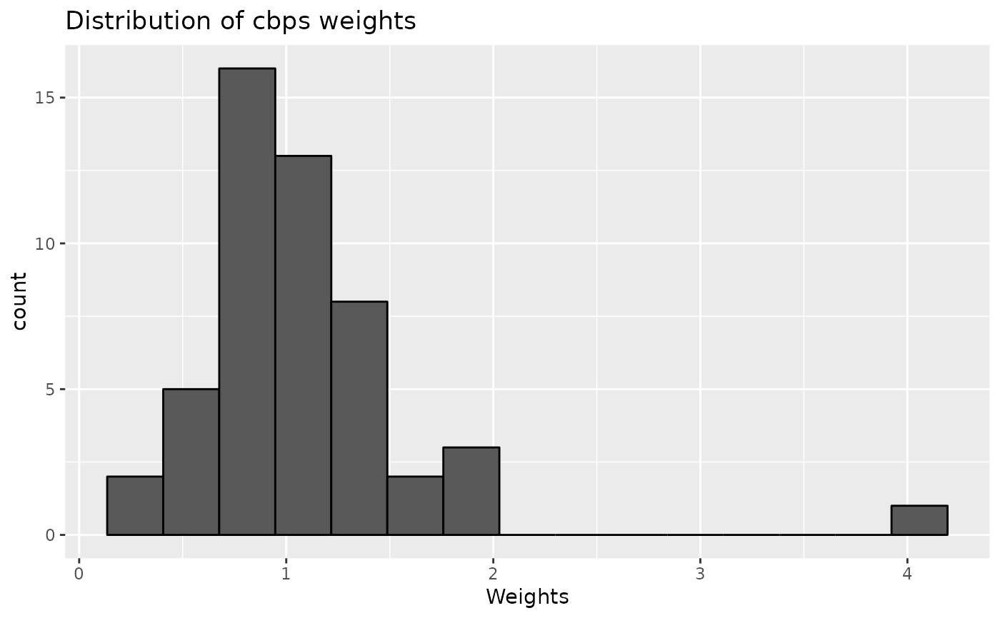

Creates IPTW balancing weights at each user-specified exposure time point using balancing formulas that relate exposure at each time point to all relevant confounders.
Arguments
- data
data in wide format as: a data frame, list of imputed data frames, or
midsobject from themicepackage- obj
initialized MSM object from
initMSM()- formulas
list of balancing formulas at each time point output from
createFormulas()- method
(optional) character string of weightitMSM() balancing method abbreviation (default is Covariate Balancing Propensity Score "cbps")
- verbose
(optional) TRUE or FALSE indicator for printing output to console. default is FALSE.
- save.out
(optional) Either logical or a character string. If
TRUE, it will output the result to a default file name withinhome_dirset ininitMSM(). You can load the data withx <- readRDS(file). To use a non-default file name, specify a character string with the file name. It will save relative tohome_dir. There might be naming conflicts where two objects get saved to the same file. In these cases, users should specify a custom name. default is FALSE.- ...
ignored
- x
devMSM_weights object from
createWeights()- i
For multiply imputed datset,
iselects which imputation to print results for. Default isi = 1. Withi = TRUE, all imputed datasets will be looped over. Withi = NULL, will average over all imputed datasets and summarize that.
Value
a list containing WeightIt::weightitMSM() output. It is the length
of the number of datasets (1 for a data.frame or the number of imputed datasets).
Examples
library(devMSMs)
data <- data.frame(
ID = 1:50,
A.1 = rnorm(n = 50),
A.2 = rnorm(n = 50),
A.3 = rnorm(n = 50),
B.1 = rnorm(n = 50),
B.2 = rnorm(n = 50),
B.3 = rnorm(n = 50),
C = rnorm(n = 50),
D.3 = rnorm(n = 50)
)
obj <- initMSM(
data,
exposure = c("A.1", "A.2", "A.3"),
ti_conf = c("C"),
tv_conf = c("B.1", "B.2", "B.3", "D.3")
)
f <- createFormulas(obj, type = "short")
w <- createWeights(data = data, obj = obj, formulas = f)
print(w)
#>
#> For the `glm` weighting method, the median weight value is 0.97 (SD = 0.25; range = 0.58-2).
plot(w)

# Methods from `WeightIt::weightitMSM`
w <- createWeights(data = data, obj = obj, formulas = f, method = "cbps")
w <- createWeights(data = data, obj = obj, formulas = f, method = "gbm")
w <- createWeights(data = data, obj = obj, formulas = f, method = "bart")
w <- createWeights(data = data, obj = obj, formulas = f, method = "super")
#> Loading required package: nnls
#> Warning: All algorithms have zero weight
#> Warning: All metalearner coefficients are zero, predictions will all be equal to 0